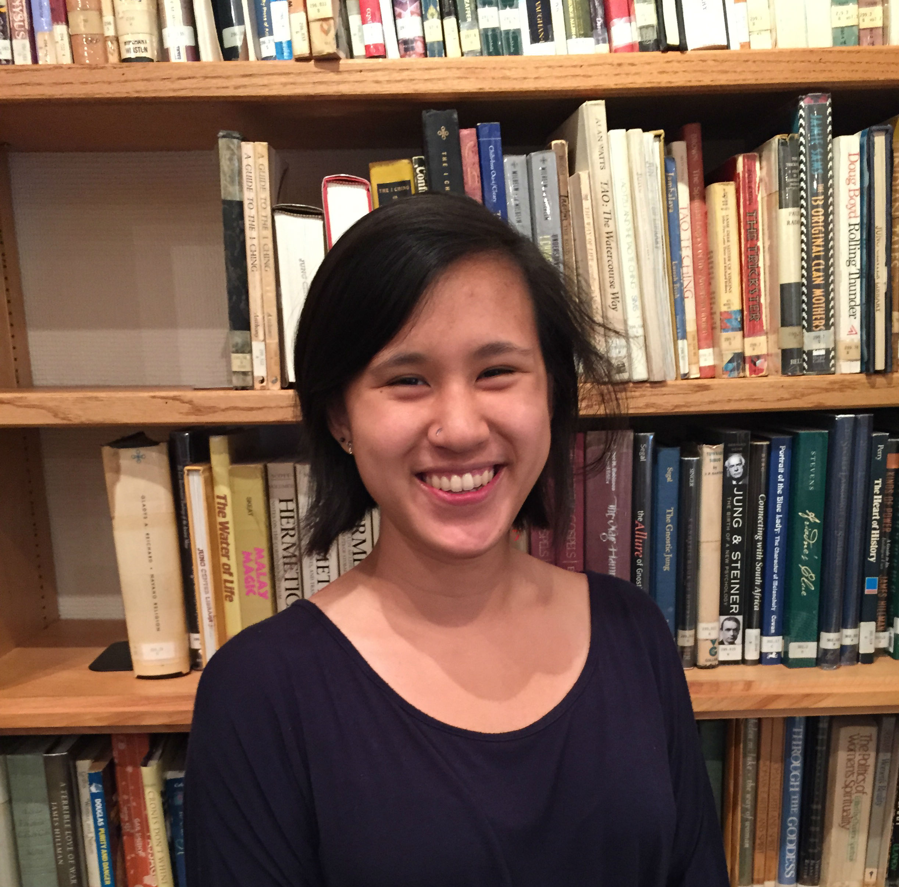
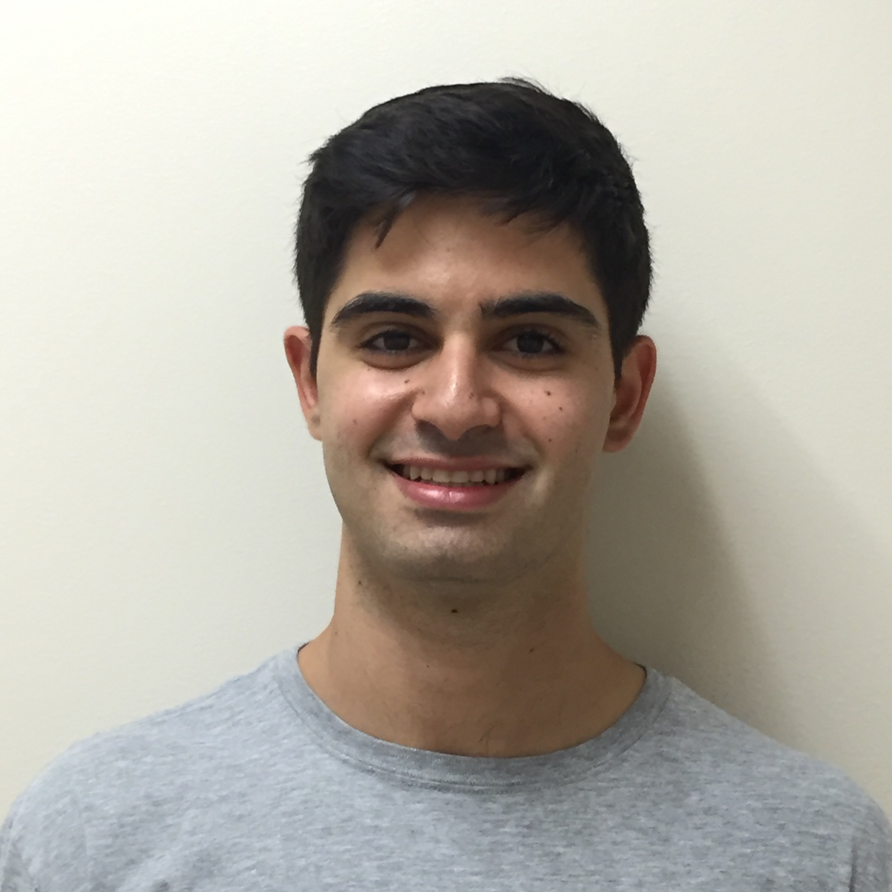
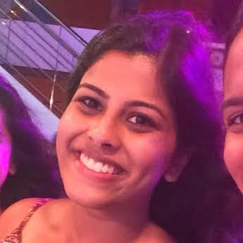
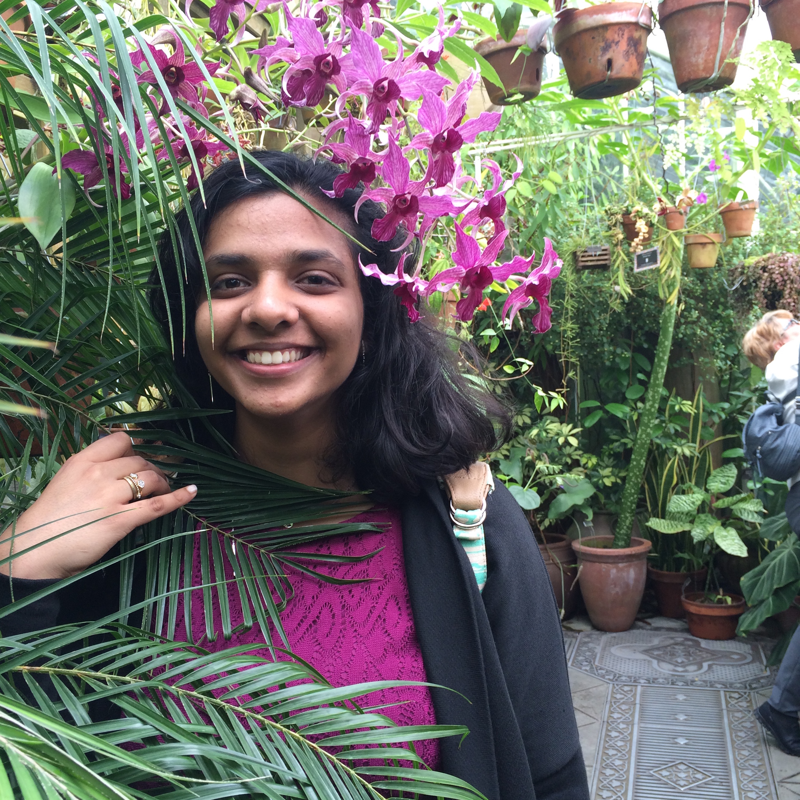
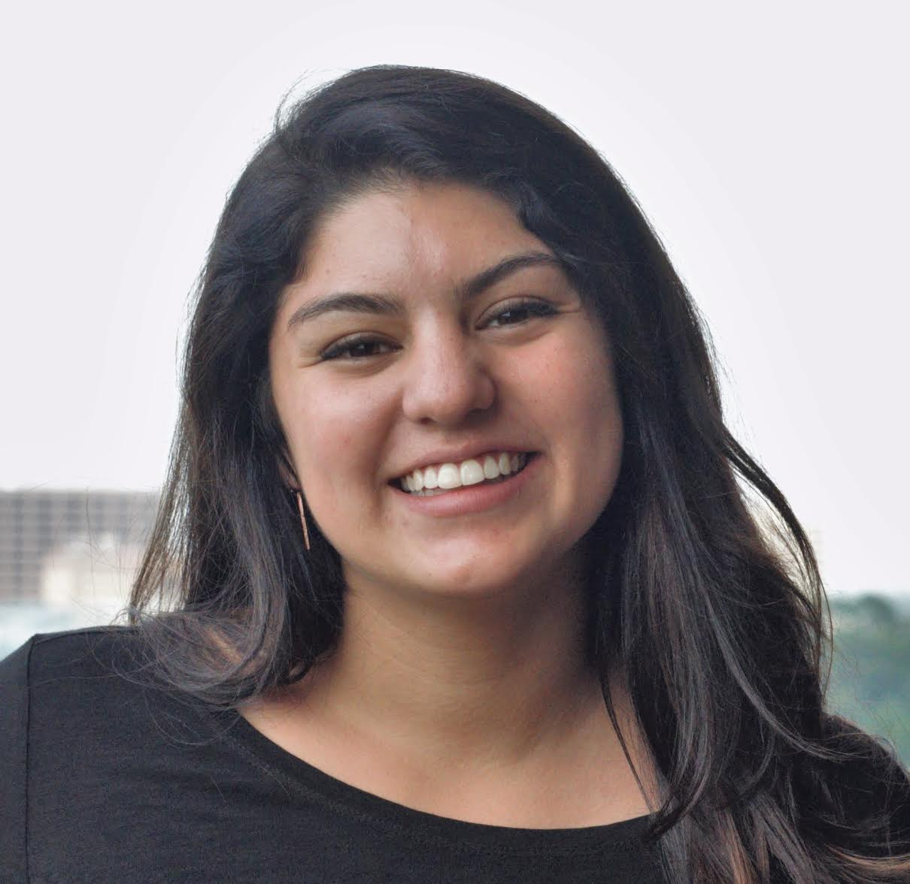
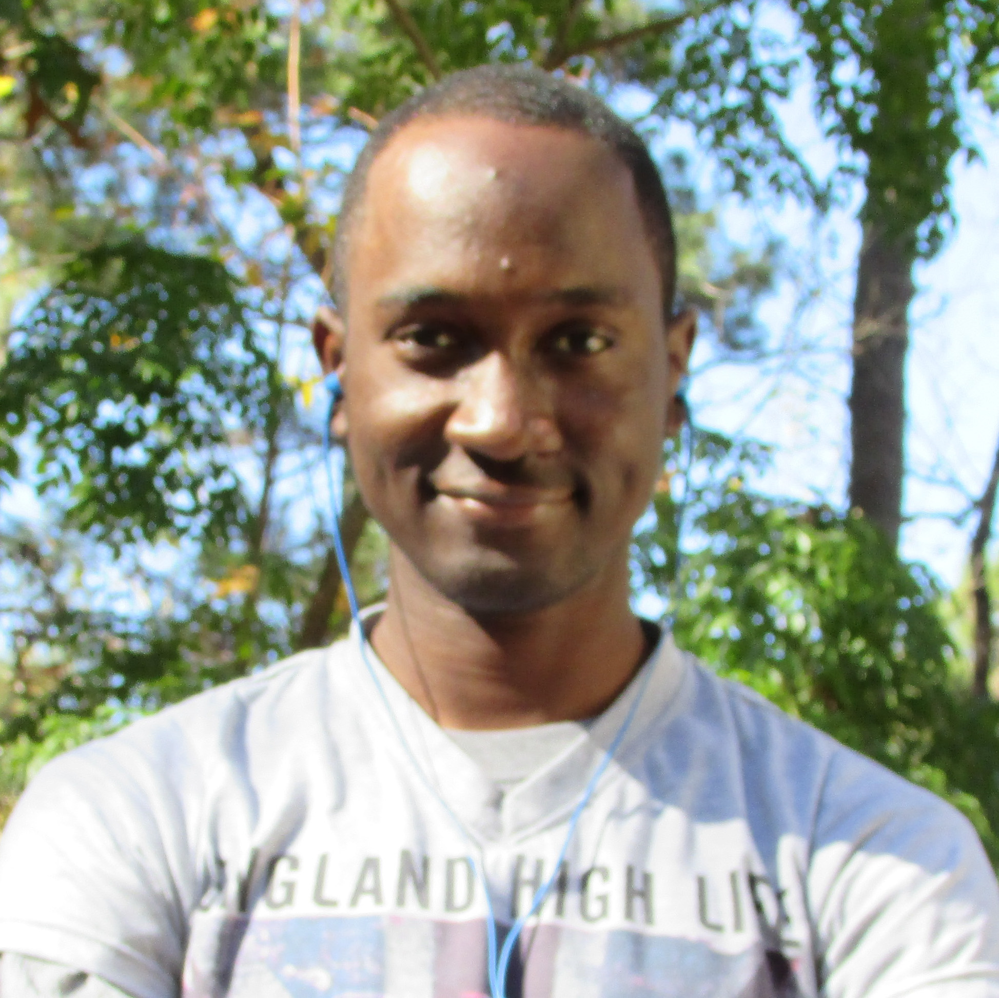
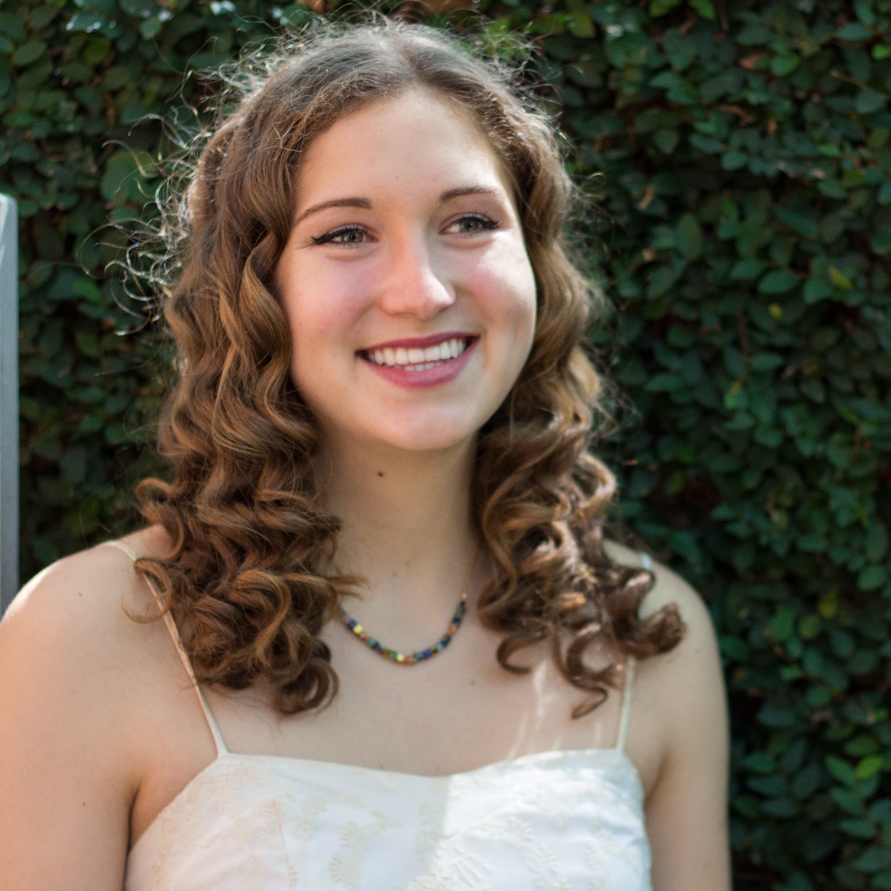

Zoe Tao, President Jones College '17 Religion, Psychology

Hi all! I’m Zoe, a senior Religion and Psychology double major at Jones College. You can also call me Pink Freud. My first ever Medical Humanities event was a discussion on near-death experiences my freshman year, which marked the beginning of an exciting journey exploring under-addressed topics in human health and becoming a humanities student (go RELI). My areas of study focus on sacred music, contemplative practice, the emotions, and alternative approaches to mental health and psychiatric care. When I’m not sending mass emails or being way too enthusiastic about my classes, I can be found having copious amounts of chai tea or experimenting with musical instruments in the Jones basement (not all of which I can actually play).
Jackie Rios, Internal Vice President Baker College '17 Earth Science (Geochemistry)
Hello MedHumies! I’m Jackie Rios. I am a Pre-med Earth Science major at Baker. I am a former RESPie and a diabetes researcher (S/O to the Kushner lab!). Random fact you’ll learn about me throughout the year is that I commute all the way from Sugar Land to go to school, so when I’m not laughing my butt off with my friends I am probably enjoying homemade food with my family! My favorite thing about MedHum is how diverse we are. Not only do the members come from different backgrounds, we are all interested in different topics that are MedHum related! It makes for interesting discussions and vast learning experiences. Get ready for some great events because MedHum will Rock your world, I sure don’t take it for granite! (See what I did there, hahah)
Sierra Cowan, External Vice President Baker College '18 Biochemistry and Cell Biology, Neuroscience Minor
My name is Sierra Cowan and I am the 2016-2017 External Vice President. I am a junior from Baker College majoring in Biochemistry and Cell Biology and minoring in Neuroscience (Humanities and Social Sciences track). When I’m not VP-ing or slaving my life away in lab at Baylor, I like to browse french bulldog instagram accounts, lift weights, eat my weight in ice cream, watch Grey’s Anatomy, and listen to T. Swift albums on repeat. My favorite things about MedHum are coffee chats, Julia Chavez, and all of the opportunities I get to hear various perspectives about medicine and healthcare. I am so excited for the club this upcoming year and can’t wait to see how much more we grow on and off the Rice campus.
Rami Dibbs, Treasurer McMurtry College '17 Chemistry

Hi friends! I am Rami Dibbs and I am a senior from McMurtry College majoring in Chemistry and minoring in Biochemistry. What I love about Rice MedHum is that it allows me to explore the multifaceted world of medicine and health without focusing on the science behind it all. And wow is it refreshing, meaningful, and so important! Outside of MedHum and all things Rice academics, you can find me hanging out with friends, exploring Houston, and watching TV shows while drinking more Earl Grey tea than I am probably comfortable admitting to (It’s true, ask Coffee House!). This year, Medical Humanities is going to be a blast, and I can’t wait to experience it with all of you!
Theja Anantasagar, Secretary Hanszen College '18 Kinesiology (Health Sciences), Business Minor

Hi! My name is Theja and I'm a junior at Hanszen following the pre-med track. I'm majoring in Kinesiology (Health Sciences) with a minor in Biochemistry & Cell Biology and Business. I was born in India, but have lived in Houston, TX for the past 11 years! In my free time, I love to explore Houston and spend time with friends and family. One of my favorite things about MedHum is how it brings forward unconventional ideas and discussions often disregarded in a traditional premedical curriculum. Oh, and also these wonderful people on the board with me, of course!
Astha Mittal, College Rep Chair Jones College '17 Psychology

Saisree Ravi, Publicity Chair Will Rice College '19
Julia Chavez, Design Head & Spring Event Coordinator Sid Richardson College '17 Cognitive Sciences

Othniel Twum-Barimah, Historian McMurtry College '19 Biochemistry and Cell Biology

Lucy Fox, Website Manager Wiess College '19 Computer Science

Dani Shewmake, Fundraising Chair Jones College '18 Spanish, Ecology and Evolutionary Biology
Shivani Raman, Outreach Chair Martel College '19 Cognitive Sciences, Poverty, Justice, and Human Capabilities Minor
Julia Ng, Socials Chair Sid Richardson College '18 Cognitive Sciences (Neuroscience)